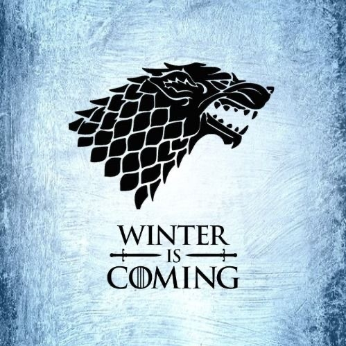
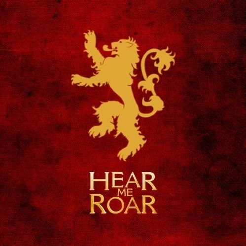
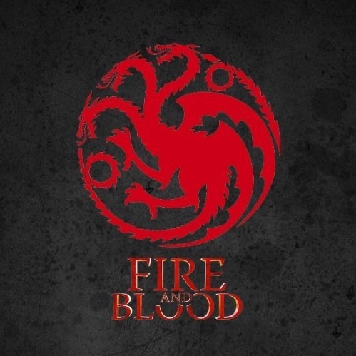
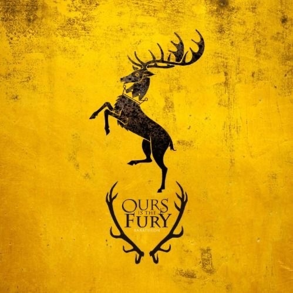
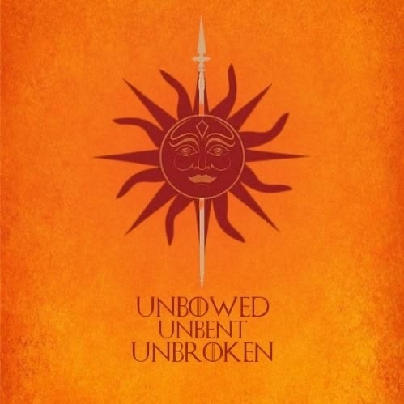
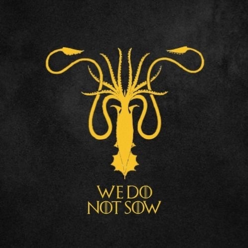
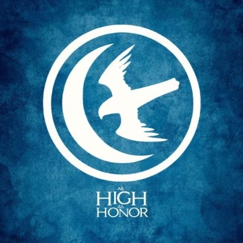
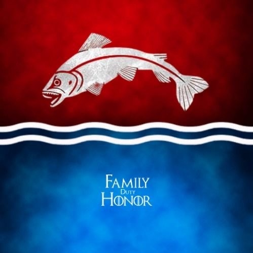

Старк (Stark)
Девиз: «Зима близко» (Winter is Coming)
Регион: Север (The North)
Один из древнейших родов Вестероса, правящий из замка Винтерфелл. Старк — символ чести, долга и стойкости. Исторически они были Королями Севера, пока не преклонили колено перед Таргариенами. На их гербе изображен лютоволк.

Ланнистер (Lannister)
Девиз: «Услышь мой рев!» (Hear Me Roar!), хотя неофициальный девиз «Ланнистеры всегда платят свои долги» известен гораздо шире.
Регион: Западные земли (The Westerlands)
Самый богатый и влиятельный дом Семи Королевств, чья резиденция находится в Утесе Кастерли. Ланнистеры славятся своим золотом, политическими амбициями и готовностью идти на любые меры ради удержания власти. Их герб — золотой лев.

Таргариен (Targaryen)
Девиз: «Пламя и кровь» (Fire and Blood)
Регион: Королевские земли / Драконий Камень (исторически — Валирия)
Династия валирийского происхождения, которая с помощью драконов завоевала и объединила Вестерос. Были свергнуты в результате восстания Роберта Баратеона, после чего последние представители дома находились в изгнании. На их гербе изображен трехглавый красный дракон.

Баратеон (Baratheon)
Девиз: «Нам ярость» (Ours is the Fury)
Регион: Штормовые земли (The Stormlands)
Дом, ставший королевским после свержения Таргариенов. Его лидер, Роберт Баратеон, занял Железный трон. Баратеоны славятся своим упрямством, воинственностью и могучим телосложением. Их резиденция — Штормовой Предел, а герб — коронованный олень.

Тирелл (Tyrell)
Девиз: «Вырастая — крепнем» (Growing Strong)
Регион: Простор (The Reach)
Правители богатого, плодородного и самого густонаселенного региона Вестероса с центром в Хайгардене. Тиреллы искусно используют дипломатию, брачные союзы и поставки продовольствия для укрепления своего влияния в столице. Их символ — золотая роза.

Мартелл (Martell)
Девиз: «Непреклонные, несгибаемые, несдающиеся» (Unbowed, Unbent, Unbroken)
Регион: Дорн (Dorne)
Правители самого южного и обособленного региона, сохранившие свои уникальные законы и обычаи (включая равное наследование для женщин). Мартеллы никогда не были завоеваны Таргариенами силой и присоединились к Семи Королевствам лишь через династический брак. Правят из Солнечного Копья, их герб — солнце, пронзенное копьем.

Грейджой (Greyjoy)
Девиз: «Мы не сеем» (We Do Not Sow)
Регион: Железные острова (The Iron Islands)
Суровый дом мореплавателей и пиратов, правящий из замка Пайк. Живут по «Старому закону», промышляя набегами и насилием. Поклоняются Утопленному богу и исторически всегда стремились отделиться от Железного трона. На их гербе изображен золотой кракен.

Аррен (Arryn)
Девиз: «Высокий как честь» (As High as Honor)
Регион: Долина Аррен (The Vale of Arryn)
Древний андальский род, правящий из неприступного замка Орлиное Гнездо, расположенного высоко в горах. Из-за географического положения Долина долгое время оставалась изолированной и защищенной от большинства войн в Вестеросе. Герб дома — летящий сокол и полумесяц.

Талли (Tully)
Девиз: «Семья, долг, честь» (Family, Duty, Honor)
Регион: Речные земли (The Riverlands)
Лорды Риверрана, чьи земли расположены в самом центре Вестероса и пересечены множеством рек. Из-за отсутствия естественных границ Речные земли чаще других регионов становились полем битвы в междоусобных войнах. Дом Талли прочно связан родственными узами с домами Старк и Аррен. Их герб — прыгающая форель.